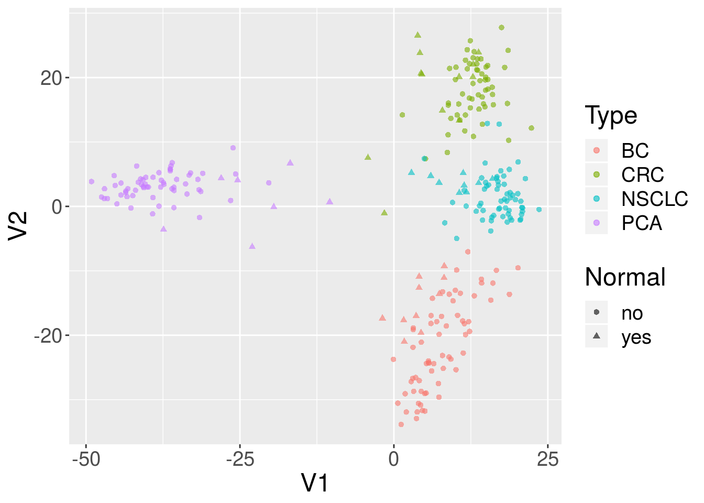

5 103: Public data resources and Bioconductor
5.1 Instructor names and contact information
- Levi Waldron <levi.waldron at sph.cuny.edu> (City University of New York, New York, NY, USA)
- Benjamin Haibe-Kains <benjamin.haibe.kains at utoronto.ca> (Princess Margaret Cancer Center, Toronto, Canada)
- Sean Davis
(Center for Cancer Research, National Cancer Institute, National Institutes of Health, Bethesda, MD, USA)
5.2 Syllabus
5.2.1 Workshop Description
The goal of this workshop is to introduce Bioconductor packages for finding, accessing, and using large-scale public data resources including the Gene Expression Omnibus GEO, Sequence Read Archive SRA, the Genomic Data Commons GDC, and Bioconductor-hosted curated data resources for metagenomics, pharmacogenomics PharmacoDB, and The Cancer Genome Atlas.
5.2.2 Pre-requisites
- Basic knowledge of R syntax
- Familiarity with the ExpressionSet and SummarizedExperiment classes
- Basic familiarity with ’omics technologies such as microarray and NGS sequencing
Interested students can prepare by reviewing vignettes of the packages listed in “R/Bioconductor packages used” to gain background on aspects of interest to them.
Some more general background on these resources is published in Kannan et al. (2016).
5.2.3 Workshop Participation
Each component will include runnable examples of typical usage that students are encouraged to run during demonstration of that component.
5.2.4 R/Bioconductor packages used
- GEOquery: Access to the NCBI Gene Expression Omnibus (GEO), a public repository of gene expression (primarily microarray) data.
- GenomicDataCommons: Access to the NIH / NCI Genomic Data Commons RESTful service.
- SRAdbV2: A compilation of metadata from the NCBI Sequence Read Archive, the largest public repository of sequencing data from the next generation of sequencing platforms, and tools
- curatedTCGAData: Curated data from The Cancer Genome Atlas (TCGA) as MultiAssayExperiment Objects
- curatedMetagenomicData: Curated metagenomic data of the human microbiome
- HMP16SData: Curated metagenomic data of the human microbiome
- PharmacoGx: Curated large-scale preclinical pharmacogenomic data and basic analysis tools
5.2.5 Time outline
This is a 1h45m workshop.
| Activity | Time |
|---|---|
| Overview | 10m |
| GEOquery | 15m |
| GenomicDataCommons | 20m |
| Sequence Read Archive | 20m |
| curatedTCGAData | 10m |
| curatedMetagenomicData and HMP16SData | 15m |
| PharmacoGx | 20m |
5.2.6 Workshop goals and objectives
Bioconductor provides access to significant amounts of publicly available experimental data. This workshop introduces students to Bioconductor interfaces to the NCBI’s Gene Expression Omnibus, Genomic Data Commons, Sequence Read Archive and PharmacoDB. It additionally introduces curated resources providing The Cancer Genome Atlas, the Human Microbiome Project and other microbiome studies, and major pharmacogenomic studies, as native Bioconductor objects ready for analysis and comparison to in-house datasets.
5.2.7 Learning goals
- search NCBI resources for publicly available ’omics data
- quickly use data from the TCGA and the Human Microbiome Project
5.2.8 Learning objectives
- find and download processed microarray and RNA-seq datasets from the Gene Expression Omnibus
- find and download ’omics data from the Genomic Data Commons and Sequence Read Archive
- download and manipulate data from The Cancer Genome Atlas and Human Microbiome Project
- download and explore pharmacogenomics data
5.3 Overview
Before proceeding, ensure that the following packages are installed.
required_pkgs = c(
"TCGAbiolinks",
"GEOquery",
"GenomicDataCommons",
"limma",
"curatedTCGAData",
"recount",
"curatedMetagenomicData",
"phyloseq",
"HMP16SData",
"caTools",
"piano",
"isa",
"VennDiagram",
"downloader",
"gdata",
"AnnotationDbi",
"hgu133a.db",
"PharmacoGx")
BiocManager::install(required_pkgs)5.4 GEOquery
(Davis and Meltzer 2007)
The NCBI Gene Expression Omnibus (GEO) serves as a public repository for a wide range of high-throughput experimental data. These data include single and dual channel microarray-based experiments measuring mRNA, genomic DNA, and protein abundance, as well as non-array techniques such as serial analysis of gene expression (SAGE), mass spectrometry proteomic data, and high-throughput sequencing data. The GEOquery package (Davis and Meltzer 2007) forms a bridge between this public repository and the analysis capabilities in Bioconductor.
5.4.1 Overview of GEO
At the most basic level of organization of GEO, there are four basic entity types. The first three (Sample, Platform, and Series) are supplied by users; the fourth, the dataset, is compiled and curated by GEO staff from the user-submitted data. See the GEO home page for more information.
5.4.1.1 Platforms
A Platform record describes the list of elements on the array (e.g., cDNAs, oligonucleotide probesets, ORFs, antibodies) or the list of elements that may be detected and quantified in that experiment (e.g., SAGE tags, peptides). Each Platform record is assigned a unique and stable GEO accession number (GPLxxx). A Platform may reference many Samples that have been submitted by multiple submitters.
5.4.1.2 Samples
A Sample record describes the conditions under which an individual Sample was handled, the manipulations it underwent, and the abundance measurement of each element derived from it. Each Sample record is assigned a unique and stable GEO accession number (GSMxxx). A Sample entity must reference only one Platform and may be included in multiple Series.
5.4.1.3 Series
A Series record defines a set of related Samples considered to be part of a group, how the Samples are related, and if and how they are ordered. A Series provides a focal point and description of the experiment as a whole. Series records may also contain tables describing extracted data, summary conclusions, or analyses. Each Series record is assigned a unique and stable GEO accession number (GSExxx). Series records are available in a couple of formats which are handled by GEOquery independently. The smaller and new GSEMatrix files are quite fast to parse; a simple flag is used by GEOquery to choose to use GSEMatrix files (see below).
5.4.1.4 Datasets
GEO DataSets (GDSxxx) are curated sets of GEO Sample data. There are hundreds of GEO datasets available, but GEO discontinued creating GDS records several years ago. We mention them here for completeness only.
5.4.2 Getting Started using GEOquery
Getting data from GEO is really quite easy. There is only one command that is needed, getGEO. This one function interprets its input to determine how to get the data from GEO and then parse the data into useful R data structures.
library(GEOquery)With the library loaded, we are free to access any GEO accession.
5.4.3 Use case: MDS plot of cancer data
The data we are going to access are from this paper.
Background: The tumor microenvironment is an important factor in cancer immunotherapy response. To further understand how a tumor affects the local immune system, we analyzed immune gene expression differences between matching normal and tumor tissue.Methods: We analyzed public and new gene expression data from solid cancers and isolated immune cell populations. We also determined the correlation between CD8, FoxP3 IHC, and our gene signatures.Results: We observed that regulatory T cells (Tregs) were one of the main drivers of immune gene expression differences between normal and tumor tissue. A tumor-specific CD8 signature was slightly lower in tumor tissue compared with normal of most (12 of 16) cancers, whereas a Treg signature was higher in tumor tissue of all cancers except liver. Clustering by Treg signature found two groups in colorectal cancer datasets. The high Treg cluster had more samples that were consensus molecular subtype 1/4, right-sided, and microsatellite-instable, compared with the low Treg cluster. Finally, we found that the correlation between signature and IHC was low in our small dataset, but samples in the high Treg cluster had significantly more CD8+ and FoxP3+ cells compared with the low Treg cluster.Conclusions: Treg gene expression is highly indicative of the overall tumor immune environment.Impact: In comparison with the consensus molecular subtype and microsatellite status, the Treg signature identifies more colorectal tumors with high immune activation that may benefit from cancer immunotherapy.
In this little exercise, we will:
- Access public omics data using the GEOquery package
- Convert the public omics data to a
SummarizedExperimentobject. - Perform a simple unsupervised analysis to visualize these public data.
Use the GEOquery package to fetch data about GSE103512.
gse = getGEO("GSE103512")[[1]]Note that getGEO, when used to retrieve GSE records, returns a list. The members of the list each represent one GEO Platform, since each GSE record can contain multiple related datasets (eg., gene expression and DNA methylation). In this case, the list is of length one, but it is still necessary to grab the first elment.
The first step–a detail–is to convert from the older Bioconductor data structure (GEOquery was written in 2007), the ExpressionSet, to the newer SummarizedExperiment. One line suffices.
library(SummarizedExperiment)
se = as(gse, "SummarizedExperiment")Examine two variables of interest, cancer type and tumor/normal status.
with(colData(se),table(`cancer.type.ch1`,`normal.ch1`))
#> normal.ch1
#> cancer.type.ch1 no yes
#> BC 65 10
#> CRC 57 12
#> NSCLC 60 9
#> PCA 60 7Filter gene expression by variance to find most informative genes.
sds = apply(assay(se, 'exprs'),1,sd)
dat = assay(se, 'exprs')[order(sds,decreasing = TRUE)[1:500],]Perform multidimensional scaling and prepare for plotting. We will be using ggplot2, so we need to make a data.frame before plotting.
mdsvals = cmdscale(dist(t(dat)))
mdsvals = as.data.frame(mdsvals)
mdsvals$Type=factor(colData(se)[,'cancer.type.ch1'])
mdsvals$Normal = factor(colData(se)[,'normal.ch1'])
head(mdsvals)
#> V1 V2 Type Normal
#> GSM2772660 8.531331 -18.57115 BC no
#> GSM2772661 8.991591 -13.63764 BC no
#> GSM2772662 10.788973 -13.48403 BC no
#> GSM2772663 3.127105 -19.13529 BC no
#> GSM2772664 13.056599 -13.88711 BC no
#> GSM2772665 7.903717 -13.24731 BC noAnd do the plot.
library(ggplot2)
ggplot(mdsvals, aes(x=V1,y=V2,shape=Normal,color=Type)) +
geom_point( alpha=0.6) + theme(text=element_text(size = 18))
5.4.4 Accessing Raw Data from GEO
NCBI GEO accepts (but has not always required) raw data such as .CEL files, .CDF files, images, etc. It is also not uncommon for some RNA-seq or other sequencing datasets to supply only raw data (with accompanying sample information, of course), necessitating Sometimes, it is useful to get quick access to such data. A single function, getGEOSuppFiles, can take as an argument a GEO accession and will download all the raw data associate with that accession. By default, the function will create a directory in the current working directory to store the raw data for the chosen GEO accession.
5.5 GenomicDataCommons
From the Genomic Data Commons (GDC) website:
The National Cancer Institute’s (NCI’s) Genomic Data Commons (GDC) is a data sharing platform that promotes precision medicine in oncology. It is not just a database or a tool; it is an expandable knowledge network supporting the import and standardization of genomic and clinical data from cancer research programs. The GDC contains NCI-generated data from some of the largest and most comprehensive cancer genomic datasets, including The Cancer Genome Atlas (TCGA) and Therapeutically Applicable Research to Generate Effective Therapies (TARGET). For the first time, these datasets have been harmonized using a common set of bioinformatics pipelines, so that the data can be directly compared. As a growing knowledge system for cancer, the GDC also enables researchers to submit data, and harmonizes these data for import into the GDC. As more researchers add clinical and genomic data to the GDC, it will become an even more powerful tool for making discoveries about the molecular basis of cancer that may lead to better care for patients.
The data model for the GDC is complex, but it worth a quick overview and a graphical representation is included here.

The data model is encoded as a so-called property graph. Nodes represent entities such as Projects, Cases, Diagnoses, Files (various kinds), and Annotations. The relationships between these entities are maintained as edges. Both nodes and edges may have Properties that supply instance details.
The GDC API exposes these nodes and edges in a somewhat simplified set of RESTful endpoints.
5.5.1 Quickstart
This quickstart section is just meant to show basic functionality. More details of functionality are included further on in this vignette and in function-specific help.
To report bugs or problems, either submit a new issue or submit a bug.report(package='GenomicDataCommons') from within R (which will redirect you to the new issue on GitHub).
5.5.1.1 Installation
Installation of the GenomicDataCommons package is identical to installation of other Bioconductor packages.
install.packages('BiocManager')
BiocManager::install('GenomicDataCommons')After installation, load the library in order to use it.
library(GenomicDataCommons)5.5.1.2 Check connectivity and status
The GenomicDataCommons package relies on having network connectivity. In addition, the NCI GDC API must also be operational and not under maintenance. Checking status can be used to check this connectivity and functionality.
GenomicDataCommons::status()
#> $commit
#> [1] "e9e20d6f97f2bf6dd3b3261e36ead57c56a4c7cc"
#>
#> $data_release
#> [1] "Data Release 12.0 - June 13, 2018"
#>
#> $status
#> [1] "OK"
#>
#> $tag
#> [1] "1.14.1"
#>
#> $version
#> [1] 15.5.1.3 Find data
The following code builds a manifest that can be used to guide the download of raw data. Here, filtering finds gene expression files quantified as raw counts using HTSeq from ovarian cancer patients.
ge_manifest = files() %>%
filter( ~ cases.project.project_id == 'TCGA-OV' &
type == 'gene_expression' &
analysis.workflow_type == 'HTSeq - Counts') %>%
manifest()5.5.1.4 Download data
After the 379 gene expression files specified in the query above. Using multiple processes to do the download very significantly speeds up the transfer in many cases. On a standard 1Gb connection, the following completes in about 30 seconds. The first time the data are downloaded, R will ask to create a cache directory (see ?gdc_cache for details of setting and interacting with the cache). Resulting downloaded files will be stored in the cache directory. Future access to the same files will be directly from the cache, alleviating multiple downloads.
fnames = lapply(ge_manifest$id[1:20],gdcdata)If the download had included controlled-access data, the download above would have needed to include a token. Details are available in the authentication section below.
5.5.1.5 Metadata queries
The GenomicDataCommons can access the significant clinical, demographic, biospecimen, and annotation information contained in the NCI GDC.
expands = c("diagnoses","annotations",
"demographic","exposures")
projResults = projects() %>%
results(size=10)
str(projResults,list.len=5)
#> List of 8
#> $ dbgap_accession_number: chr [1:10] "phs001179" "phs000470" NA NA ...
#> $ disease_type :List of 10
#> ..$ FM-AD : chr [1:23] "Germ Cell Neoplasms" "Acinar Cell Neoplasms" "Miscellaneous Tumors" "Thymic Epithelial Neoplasms" ...
#> ..$ TARGET-RT: chr "Rhabdoid Tumor"
#> ..$ TCGA-UCS : chr "Uterine Carcinosarcoma"
#> ..$ TCGA-LUSC: chr "Lung Squamous Cell Carcinoma"
#> ..$ TCGA-BRCA: chr "Breast Invasive Carcinoma"
#> .. [list output truncated]
#> $ released : logi [1:10] TRUE TRUE TRUE TRUE TRUE TRUE ...
#> $ state : chr [1:10] "open" "open" "open" "open" ...
#> $ primary_site :List of 10
#> ..$ FM-AD : chr [1:42] "Kidney" "Testis" "Unknown" "Other and unspecified parts of biliary tract" ...
#> ..$ TARGET-RT: chr "Kidney"
#> ..$ TCGA-UCS : chr "Uterus"
#> ..$ TCGA-LUSC: chr "Lung"
#> ..$ TCGA-BRCA: chr "Breast"
#> .. [list output truncated]
#> [list output truncated]
#> - attr(*, "row.names")= int [1:10] 1 2 3 4 5 6 7 8 9 10
#> - attr(*, "class")= chr [1:3] "GDCprojectsResults" "GDCResults" "list"
names(projResults)
#> [1] "dbgap_accession_number" "disease_type"
#> [3] "released" "state"
#> [5] "primary_site" "project_id"
#> [7] "id" "name"
# or listviewer::jsonedit(clinResults)5.5.2 Basic design
This package design is meant to have some similarities to the “hadleyverse” approach of dplyr. Roughly, the functionality for finding and accessing files and metadata can be divided into:
- Simple query constructors based on GDC API endpoints.
- A set of verbs that when applied, adjust filtering, field selection, and faceting (fields for aggregation) and result in a new query object (an endomorphism)
- A set of verbs that take a query and return results from the GDC
In addition, there are exhiliary functions for asking the GDC API for information about available and default fields, slicing BAM files, and downloading actual data files. Here is an overview of functionality3.
- Creating a query
projects()cases()files()annotations()
- Manipulating a query
filter()facet()select()
- Introspection on the GDC API fields
mapping()available_fields()default_fields()grep_fields()field_picker()available_values()available_expand()
- Executing an API call to retrieve query results
results()count()response()
- Raw data file downloads
gdcdata()transfer()gdc_client()
- Summarizing and aggregating field values (faceting)
aggregations()
- Authentication
gdc_token()
- BAM file slicing
slicing()
5.5.3 Usage
There are two main classes of operations when working with the NCI GDC.
- Querying metadata and finding data files (e.g., finding all gene expression quantifications data files for all colon cancer patients).
- Transferring raw or processed data from the GDC to another computer (e.g., downloading raw or processed data)
Both classes of operation are reviewed in detail in the following sections.
5.6 Querying metadata
Vast amounts of metadata about cases (patients, basically), files, projects, and so-called annotations are available via the NCI GDC API. Typically, one will want to query metadata to either focus in on a set of files for download or transfer or to perform so-called aggregations (pivot-tables, facets, similar to the R table() functionality).
Querying metadata starts with creating a “blank” query. One will often then want to filter the query to limit results prior to retrieving results. The GenomicDataCommons package has helper functions for listing fields that are available for filtering.
In addition to fetching results, the GDC API allows faceting, or aggregating,, useful for compiling reports, generating dashboards, or building user interfaces to GDC data (see GDC web query interface for a non-R-based example).
5.6.0.1 Creating a query
The GenomicDataCommons package accesses the same API as the GDC website. Therefore, a useful approach, particularly for beginning users is to examine the filters available on the GDC repository pages to find appropriate filtering criteria. From there, converting those checkboxes to a GenomicDataCommons query() is relatively straightforward. Note that only a small subset of the available_fields() are available by default on the website.
A screenshot of an example query of the GDC repository portal.
A query of the GDC starts its life in R. Queries follow the four metadata endpoints available at the GDC. In particular, there are four convenience functions that each create GDCQuery objects (actually, specific subclasses of GDCQuery):
projects()cases()files()annotations()
pquery = projects()The pquery object is now an object of (S3) class, GDCQuery (and gdc_projects and list). The object contains the following elements:
- fields: This is a character vector of the fields that will be returned when we retrieve data. If no fields are specified to, for example, the
projects()function, the default fields from the GDC are used (seedefault_fields()) - filters: This will contain results after calling the
filter()method and will be used to filter results on retrieval. - facets: A character vector of field names that will be used for aggregating data in a call to
aggregations(). - archive: One of either “default” or “legacy”.
- token: A character(1) token from the GDC. See the authentication section for details, but note that, in general, the token is not necessary for metadata query and retrieval, only for actual data download.
Looking at the actual object (get used to using str()!), note that the query contains no results.
str(pquery)
#> List of 5
#> $ fields : chr [1:16] "awg_review" "dbgap_accession_number" "disease_type" "in_review" ...
#> $ filters: NULL
#> $ facets : NULL
#> $ legacy : logi FALSE
#> $ expand : NULL
#> - attr(*, "class")= chr [1:3] "gdc_projects" "GDCQuery" "list"5.6.0.2 Retrieving results
[ GDC pagination documentation ]
With a query object available, the next step is to retrieve results from the GDC. The GenomicDataCommons package. The most basic type of results we can get is a simple count() of records available that satisfy the filter criteria. Note that we have not set any filters, so a count() here will represent all the project records publicly available at the GDC in the “default” archive"
pcount = count(pquery)
# or
pcount = pquery %>% count()
pcount
#> [1] 40The results() method will fetch actual results.
presults = pquery %>% results()These results are returned from the GDC in JSON format and converted into a (potentially nested) list in R. The str() method is useful for taking a quick glimpse of the data.
str(presults)
#> List of 8
#> $ dbgap_accession_number: chr [1:10] "phs001179" "phs000470" NA NA ...
#> $ disease_type :List of 10
#> ..$ FM-AD : chr [1:23] "Germ Cell Neoplasms" "Acinar Cell Neoplasms" "Miscellaneous Tumors" "Thymic Epithelial Neoplasms" ...
#> ..$ TARGET-RT: chr "Rhabdoid Tumor"
#> ..$ TCGA-UCS : chr "Uterine Carcinosarcoma"
#> ..$ TCGA-LUSC: chr "Lung Squamous Cell Carcinoma"
#> ..$ TCGA-BRCA: chr "Breast Invasive Carcinoma"
#> ..$ TCGA-SKCM: chr "Skin Cutaneous Melanoma"
#> ..$ TARGET-OS: chr "Osteosarcoma"
#> ..$ TCGA-THYM: chr "Thymoma"
#> ..$ TARGET-WT: chr "High-Risk Wilms Tumor"
#> ..$ TCGA-ESCA: chr "Esophageal Carcinoma"
#> $ released : logi [1:10] TRUE TRUE TRUE TRUE TRUE TRUE ...
#> $ state : chr [1:10] "open" "open" "open" "open" ...
#> $ primary_site :List of 10
#> ..$ FM-AD : chr [1:42] "Kidney" "Testis" "Unknown" "Other and unspecified parts of biliary tract" ...
#> ..$ TARGET-RT: chr "Kidney"
#> ..$ TCGA-UCS : chr "Uterus"
#> ..$ TCGA-LUSC: chr "Lung"
#> ..$ TCGA-BRCA: chr "Breast"
#> ..$ TCGA-SKCM: chr "Skin"
#> ..$ TARGET-OS: chr "Bone"
#> ..$ TCGA-THYM: chr "Thymus"
#> ..$ TARGET-WT: chr "Kidney"
#> ..$ TCGA-ESCA: chr "Esophagus"
#> $ project_id : chr [1:10] "FM-AD" "TARGET-RT" "TCGA-UCS" "TCGA-LUSC" ...
#> $ id : chr [1:10] "FM-AD" "TARGET-RT" "TCGA-UCS" "TCGA-LUSC" ...
#> $ name : chr [1:10] "Foundation Medicine Adult Cancer Clinical Dataset (FM-AD)" "Rhabdoid Tumor" "Uterine Carcinosarcoma" "Lung Squamous Cell Carcinoma" ...
#> - attr(*, "row.names")= int [1:10] 1 2 3 4 5 6 7 8 9 10
#> - attr(*, "class")= chr [1:3] "GDCprojectsResults" "GDCResults" "list"A default of only 10 records are returned. We can use the size and from arguments to results() to either page through results or to change the number of results. Finally, there is a convenience method, results_all() that will simply fetch all the available results given a query. Note that results_all() may take a long time and return HUGE result sets if not used carefully. Use of a combination of count() and results() to get a sense of the expected data size is probably warranted before calling results_all()
length(ids(presults))
#> [1] 10
presults = pquery %>% results_all()
length(ids(presults))
#> [1] 40
# includes all records
length(ids(presults)) == count(pquery)
#> [1] TRUEExtracting subsets of results or manipulating the results into a more conventional R data structure is not easily generalizable. However, the purrr, rlist, and data.tree packages are all potentially of interest for manipulating complex, nested list structures. For viewing the results in an interactive viewer, consider the listviewer package.
5.6.0.3 Fields and Values
Central to querying and retrieving data from the GDC is the ability to specify which fields to return, filtering by fields and values, and faceting or aggregating. The GenomicDataCommons package includes two simple functions, available_fields() and default_fields(). Each can operate on a character(1) endpoint name (“cases”, “files”, “annotations”, or “projects”) or a GDCQuery object.
default_fields('files')
#> [1] "access" "acl"
#> [3] "batch_id" "created_datetime"
#> [5] "data_category" "data_format"
#> [7] "data_type" "error_type"
#> [9] "experimental_strategy" "file_autocomplete"
#> [11] "file_id" "file_name"
#> [13] "file_size" "file_state"
#> [15] "imaging_date" "magnification"
#> [17] "md5sum" "origin"
#> [19] "platform" "read_pair_number"
#> [21] "revision" "state"
#> [23] "state_comment" "submitter_id"
#> [25] "tags" "type"
#> [27] "updated_datetime"
# The number of fields available for files endpoint
length(available_fields('files'))
#> [1] 703
# The first few fields available for files endpoint
head(available_fields('files'))
#> [1] "access" "acl"
#> [3] "analysis.analysis_id" "analysis.analysis_type"
#> [5] "analysis.batch_id" "analysis.created_datetime"The fields to be returned by a query can be specified following a similar paradigm to that of the dplyr package. The select() function is a verb that resets the fields slot of a GDCQuery; note that this is not quite analogous to the dplyr select() verb that limits from already-present fields. We completely replace the fields when using select() on a GDCQuery.
# Default fields here
qcases = cases()
qcases$fields
#> [1] "aliquot_ids" "analyte_ids"
#> [3] "batch_id" "case_autocomplete"
#> [5] "case_id" "created_datetime"
#> [7] "days_to_index" "days_to_lost_to_followup"
#> [9] "disease_type" "index_date"
#> [11] "lost_to_followup" "portion_ids"
#> [13] "primary_site" "sample_ids"
#> [15] "slide_ids" "state"
#> [17] "submitter_aliquot_ids" "submitter_analyte_ids"
#> [19] "submitter_id" "submitter_portion_ids"
#> [21] "submitter_sample_ids" "submitter_slide_ids"
#> [23] "updated_datetime"
# set up query to use ALL available fields
# Note that checking of fields is done by select()
qcases = cases() %>% GenomicDataCommons::select(available_fields('cases'))
head(qcases$fields)
#> [1] "case_id" "aliquot_ids"
#> [3] "analyte_ids" "annotations.annotation_id"
#> [5] "annotations.batch_id" "annotations.case_id"Finding fields of interest is such a common operation that the GenomicDataCommons includes the grep_fields() function and the field_picker() widget. See the appropriate help pages for details.
5.6.0.4 Facets and aggregation
The GDC API offers a feature known as aggregation or faceting. By specifying one or more fields (of appropriate type), the GDC can return to us a count of the number of records matching each potential value. This is similar to the R table method. Multiple fields can be returned at once, but the GDC API does not have a cross-tabulation feature; all aggregations are only on one field at a time. Results of aggregation() calls come back as a list of data.frames (actually, tibbles).
# total number of files of a specific type
res = files() %>% facet(c('type','data_type')) %>% aggregations()
res$type
#> key doc_count
#> 1 simple_somatic_mutation 64015
#> 2 annotated_somatic_mutation 63580
#> 3 aligned_reads 45985
#> 4 copy_number_segment 44752
#> 5 gene_expression 34713
#> 6 slide_image 30036
#> 7 biospecimen_supplement 25151
#> 8 mirna_expression 22976
#> 9 clinical_supplement 12496
#> 10 methylation_beta_value 12359
#> 11 aggregated_somatic_mutation 186
#> 12 masked_somatic_mutation 132Using aggregations() is an also easy way to learn the contents of individual fields and forms the basis for faceted search pages.
5.6.0.5 Filtering
[ GDC filtering documentation ]
The GenomicDataCommons package uses a form of non-standard evaluation to specify R-like queries that are then translated into an R list. That R list is, upon calling a method that fetches results from the GDC API, translated into the appropriate JSON string. The R expression uses the formula interface as suggested by Hadley Wickham in his vignette on non-standard evaluation
It’s best to use a formula because a formula captures both the expression to evaluate and the environment where the evaluation occurs. This is important if the expression is a mixture of variables in a data frame and objects in the local environment [for example].
For the user, these details will not be too important except to note that a filter expression must begin with a “~”.
qfiles = files()
qfiles %>% count() # all files
#> [1] 356381To limit the file type, we can refer back to the section on faceting to see the possible values for the file field “type”. For example, to filter file results to only “gene_expression” files, we simply specify a filter.
qfiles = files() %>% filter(~ type == 'gene_expression')
# here is what the filter looks like after translation
str(get_filter(qfiles))
#> List of 2
#> $ op : 'scalar' chr "="
#> $ content:List of 2
#> ..$ field: chr "type"
#> ..$ value: chr "gene_expression"What if we want to create a filter based on the project (‘TCGA-OVCA’, for example)? Well, we have a couple of possible ways to discover available fields. The first is based on base R functionality and some intuition.
grep('pro',available_fields('files'),value=TRUE)
#> [1] "cases.diagnoses.progression_free_survival"
#> [2] "cases.diagnoses.progression_free_survival_event"
#> [3] "cases.diagnoses.progression_or_recurrence"
#> [4] "cases.project.awg_review"
#> [5] "cases.project.dbgap_accession_number"
#> [6] "cases.project.disease_type"
#> [7] "cases.project.in_review"
#> [8] "cases.project.intended_release_date"
#> [9] "cases.project.is_legacy"
#> [10] "cases.project.name"
#> [11] "cases.project.primary_site"
#> [12] "cases.project.program.dbgap_accession_number"
#> [13] "cases.project.program.name"
#> [14] "cases.project.program.program_id"
#> [15] "cases.project.project_id"
#> [16] "cases.project.releasable"
#> [17] "cases.project.release_requested"
#> [18] "cases.project.released"
#> [19] "cases.project.request_submission"
#> [20] "cases.project.state"
#> [21] "cases.project.submission_enabled"
#> [22] "cases.samples.days_to_sample_procurement"
#> [23] "cases.samples.method_of_sample_procurement"
#> [24] "cases.samples.portions.slides.number_proliferating_cells"
#> [25] "cases.tissue_source_site.project"Interestingly, the project information is “nested” inside the case. We don’t need to know that detail other than to know that we now have a few potential guesses for where our information might be in the files records. We need to know where because we need to construct the appropriate filter.
files() %>% facet('cases.project.project_id') %>% aggregations()
#> $cases.project.project_id
#> key doc_count
#> 1 FM-AD 36134
#> 2 TCGA-BRCA 31511
#> 3 TCGA-LUAD 17051
#> 4 TCGA-UCEC 16130
#> 5 TCGA-HNSC 15266
#> 6 TCGA-OV 15057
#> 7 TCGA-THCA 14420
#> 8 TCGA-LUSC 15323
#> 9 TCGA-LGG 14723
#> 10 TCGA-KIRC 15082
#> 11 TCGA-PRAD 14287
#> 12 TCGA-COAD 14270
#> 13 TCGA-GBM 11973
#> 14 TCGA-SKCM 12724
#> 15 TCGA-STAD 12845
#> 16 TCGA-BLCA 11710
#> 17 TCGA-LIHC 10814
#> 18 TCGA-CESC 8593
#> 19 TCGA-KIRP 8506
#> 20 TCGA-SARC 7493
#> 21 TCGA-PAAD 5306
#> 22 TCGA-ESCA 5270
#> 23 TCGA-PCPG 5032
#> 24 TCGA-READ 4918
#> 25 TCGA-TGCT 4217
#> 26 TCGA-THYM 3444
#> 27 TCGA-LAML 3960
#> 28 TARGET-NBL 2795
#> 29 TCGA-ACC 2546
#> 30 TCGA-KICH 2324
#> 31 TCGA-MESO 2330
#> 32 TARGET-AML 2170
#> 33 TCGA-UVM 2179
#> 34 TCGA-UCS 1658
#> 35 TARGET-WT 1406
#> 36 TCGA-DLBC 1330
#> 37 TCGA-CHOL 1348
#> 38 TARGET-OS 47
#> 39 TARGET-RT 174
#> 40 TARGET-CCSK 15We note that cases.project.project_id looks like it is a good fit. We also note that TCGA-OV is the correct project_id, not TCGA-OVCA. Note that unlike with dplyr and friends, the filter() method here replaces the filter and does not build on any previous filters.
qfiles = files() %>%
filter( ~ cases.project.project_id == 'TCGA-OV' & type == 'gene_expression')
str(get_filter(qfiles))
#> List of 2
#> $ op : 'scalar' chr "and"
#> $ content:List of 2
#> ..$ :List of 2
#> .. ..$ op : 'scalar' chr "="
#> .. ..$ content:List of 2
#> .. .. ..$ field: chr "cases.project.project_id"
#> .. .. ..$ value: chr "TCGA-OV"
#> ..$ :List of 2
#> .. ..$ op : 'scalar' chr "="
#> .. ..$ content:List of 2
#> .. .. ..$ field: chr "type"
#> .. .. ..$ value: chr "gene_expression"
qfiles %>% count()
#> [1] 1137Asking for a count() of results given these new filter criteria gives r qfiles %>% count() results. Generating a manifest for bulk downloads is as simple as asking for the manifest from the current query.
manifest_df = qfiles %>% manifest()
head(manifest_df)
#> # A tibble: 6 x 5
#> id filename md5 size state
#> <chr> <chr> <chr> <int> <chr>
#> 1 567ced20-00cf-46… b2552f6f-dd15-410f-a621-… 9af0d993c40aec… 258324 live
#> 2 05692746-1770-47… 701b8c71-6c05-4e5b-ac10-… 8e9816f4d9b871… 526537 live
#> 3 e2d47640-8565-43… b2552f6f-dd15-410f-a621-… e05190ed65c8a8… 543367 live
#> 4 bc6dab72-dc5a-4c… a1c4f19e-079e-47e7-8939-… 110d8cda0ccdf6… 253059 live
#> 5 0a176c20-f3f3-4b… 01eac123-1e21-440d-9495-… b40921f17128a9… 540592 live
#> 6 2ae73487-7acf-42… 12c8b289-b9d0-4697-b3a6-… 4d3c2b951d94f0… 549437 liveNote that we might still not be quite there. Looking at filenames, there are suspiciously named files that might include “FPKM”, “FPKM-UQ”, or “counts”. Another round of grep and available_fields, looking for “type” turned up that the field “analysis.workflow_type” has the appropriate filter criteria.
qfiles = files() %>% filter( ~ cases.project.project_id == 'TCGA-OV' &
type == 'gene_expression' &
analysis.workflow_type == 'HTSeq - Counts')
manifest_df = qfiles %>% manifest()
nrow(manifest_df)
#> [1] 379The GDC Data Transfer Tool can be used (from R, transfer() or from the command-line) to orchestrate high-performance, restartable transfers of all the files in the manifest. See the bulk downloads section for details.
5.6.1 Authentication
[ GDC authentication documentation ]
The GDC offers both “controlled-access” and “open” data. As of this writing, only data stored as files is “controlled-access”; that is, metadata accessible via the GDC is all “open” data and some files are “open” and some are “controlled-access”. Controlled-access data are only available after going through the process of obtaining access.
After controlled-access to one or more datasets has been granted, logging into the GDC web portal will allow you to access a GDC authentication token, which can be downloaded and then used to access available controlled-access data via the GenomicDataCommons package.
The GenomicDataCommons uses authentication tokens only for downloading data (see transfer and gdcdata documentation). The package includes a helper function, gdc_token, that looks for the token to be stored in one of three ways (resolved in this order):
- As a string stored in the environment variable,
GDC_TOKEN - As a file, stored in the file named by the environment variable,
GDC_TOKEN_FILE - In a file in the user home directory, called
.gdc_token
As a concrete example:
token = gdc_token()
transfer(...,token=token)
# or
transfer(...,token=get_token())5.6.2 Datafile access and download
The gdcdata function takes a character vector of one or more file ids. A simple way of producing such a vector is to produce a manifest data frame and then pass in the first column, which will contain file ids.
fnames = gdcdata(manifest_df$id[1:2],progress=FALSE)Note that for controlled-access data, a GDC authentication token is required. Using the BiocParallel package may be useful for downloading in parallel, particularly for large numbers of smallish files.
The bulk download functionality is only efficient (as of v1.2.0 of the GDC Data Transfer Tool) for relatively large files, so use this approach only when transferring BAM files or larger VCF files, for example. Otherwise, consider using the approach shown above, perhaps in parallel.
fnames = gdcdata(manifest_df$id[3:10], access_method = 'client')5.7 Sequence Read Archive
The SRAdbV2 package is currently available from GitHub and is under active development. Either the devtools package or the BiocManager package can be used for easy installation.
install.packages('BiocManager')
BiocManager::install('seandavi/SRAdbV2')5.7.1 Usage
5.7.1.1 Loading the library
library(SRAdbV2)
#> Loading required package: R65.7.1.2 The Omicidx
The entrypoint for using the SRAdbV2 system is the Omicidx, an R6 class. To start, create a new instance of the class.
oidx = Omicidx$new()Typing oidx$ and then TAB will give possible completions. Note the “search” completion.
5.7.1.3 Queries
Once an instance of Omicidx is created (here we will call the instance oidx), search capabilities are available via oidx$search(). The one interesting parameter is the q parameter. This parameter takes a string formatted as a Lucene query string. See below for Query syntax.
query=paste(
paste0('sample_taxon_id:', 10116),
'AND experiment_library_strategy:"rna seq"',
'AND experiment_library_source:transcriptomic',
'AND experiment_platform:illumina')
z = oidx$search(q=query,entity='full',size=100L)The entity parameter is one of the SRA entity types available via the API. The size parameter is the number of records that will be returned in each “chunk”.
5.7.1.4 Fetching results
Because result sets can be large, we have a special method that allows us to “scroll” through the results or to simply get them en bloc. The first step for result retrieval, then, is to get a Scroller.
s = z$scroll()
s
#> <Scroller>
#> Public:
#> clone: function (deep = FALSE)
#> collate: function (limit = Inf)
#> count: active binding
#> fetched: active binding
#> has_next: function ()
#> initialize: function (search, progress = interactive())
#> reset: function ()
#> yield: function ()
#> Private:
#> .count: NULL
#> .fetched: 0
#> .last: FALSE
#> progress: FALSE
#> scroll: 1m
#> scroll_id: NULL
#> search: Searcher, R6Methods such as s$count allow introspection into the available number of results, in this case, 8886 records.
The Scroller provides two different approaches to accessing the resulting data.
5.7.1.4.1 Collating entire result sets
The first approach to getting results of a query back into R is the most convenient, but for large result sets, the entire dataset is loaded into memory and may take significant time if network connections are slow.
# for VERY large result sets, this may take
# quite a bit of time and/or memory. An
# alternative is to use s$chunk() to retrieve
# one batch of records at a time and process
# incrementally.
res = s$collate(limit = 1000)
head(res)
#> # A tibble: 6 x 85
#> experiment_Insdc experiment_LastMet… experiment_LastUpd…
#> <lgl> <dttm> <dttm>
#> 1 TRUE 2018-04-10 11:28:04 2018-04-10 11:52:20
#> 2 TRUE 2018-05-06 06:12:59 2018-05-06 06:42:38
#> 3 TRUE 2013-08-28 07:50:02 2014-04-13 06:08:21
#> 4 TRUE 2018-04-10 11:28:00 2018-04-10 11:34:38
#> 5 TRUE 2016-12-07 17:16:11 2017-06-21 23:05:24
#> 6 TRUE 2016-10-21 15:03:02 2016-10-22 13:55:27
#> # ... with 82 more variables: experiment_Published <dttm>,
#> # experiment_Received <dttm>, experiment_Status <chr>,
#> # experiment_accession <chr>, experiment_alias <chr>,
#> # experiment_center_name <chr>, experiment_identifiers <list>,
#> # experiment_instrument_model <chr>,
#> # experiment_library_construction_protocol <chr>,
#> # experiment_library_layout <chr>, experiment_library_name <chr>,
#> # experiment_library_selection <chr>, experiment_library_source <chr>,
#> # experiment_library_strategy <chr>, experiment_platform <chr>,
#> # experiment_title <chr>, run_FileDate <dbl>, run_FileMd5 <chr>,
#> # run_FileSize <int>, run_Insdc <lgl>, run_LastMetaUpdate <dttm>,
#> # run_LastUpdate <dttm>, run_Published <dttm>, run_Received <dttm>,
#> # run_Status <chr>, run_accession <chr>, run_alias <chr>,
#> # run_attributes <list>, run_bases <dbl>, run_center_name <chr>,
#> # run_identifiers <list>, run_nreads <int>, run_reads <list>,
#> # run_spot_length <int>, run_spots <int>, sample_BioSample <chr>,
#> # sample_Insdc <lgl>, sample_LastMetaUpdate <dttm>,
#> # sample_LastUpdate <dttm>, sample_Published <dttm>,
#> # sample_Received <dttm>, sample_Status <chr>, sample_accession <chr>,
#> # sample_alias <chr>, sample_attributes <list>,
#> # sample_center_name <chr>, sample_identifiers <list>,
#> # sample_organism <chr>, sample_taxon_id <int>, sample_title <chr>,
#> # study_BioProject <chr>, study_Insdc <lgl>,
#> # study_LastMetaUpdate <dttm>, study_LastUpdate <dttm>,
#> # study_Published <dttm>, study_Received <dttm>, study_Status <chr>,
#> # study_abstract <chr>, study_accession <chr>, study_alias <chr>,
#> # study_attributes <list>, study_center_name <chr>,
#> # study_description <chr>, study_identifiers <list>, study_title <chr>,
#> # study_type <chr>, experiment_attributes <list>,
#> # experiment_broker_name <chr>, experiment_design <chr>,
#> # run_broker_name <chr>, run_center <chr>, sample_broker_name <chr>,
#> # sample_description <chr>, study_broker_name <chr>,
#> # run_file_addons <list>, experiment_library_layout_length <dbl>,
#> # experiment_library_layout_sdev <chr>, sample_xrefs <list>,
#> # experiment_xrefs <list>, sample_GEO <chr>, study_GEO <chr>,
#> # study_xrefs <list>Note that the scroller now reports that it has fetched (s$fetched) 1000 records.
To reuse a Scroller, we must reset it first.
s$reset()
s
#> <Scroller>
#> Public:
#> clone: function (deep = FALSE)
#> collate: function (limit = Inf)
#> count: active binding
#> fetched: active binding
#> has_next: function ()
#> initialize: function (search, progress = interactive())
#> reset: function ()
#> yield: function ()
#> Private:
#> .count: 8886
#> .fetched: 0
#> .last: FALSE
#> progress: FALSE
#> scroll: 1m
#> scroll_id: NULL
#> search: Searcher, R65.7.1.4.2 Yielding chunks
The second approach is to iterate through results using the yield method. This approach allows the user to perform processing on chunks of data as they arrive in R.
j = 0
## fetch only 500 records, but
## `yield` will return NULL
## after ALL records have been fetched
while(s$fetched < 500) {
res = s$yield()
# do something interesting with `res` here if you like
j = j + 1
message(sprintf('total of %d fetched records, loop iteration # %d', s$fetched, j))
}
#> total of 100 fetched records, loop iteration # 1
#> total of 200 fetched records, loop iteration # 2
#> total of 300 fetched records, loop iteration # 3
#> total of 400 fetched records, loop iteration # 4
#> total of 500 fetched records, loop iteration # 5The Scroller also has a has_next() method that will report TRUE if the result set has not been fully fetched. Using the reset() method will move the cursor back to the beginning of the result set.
5.7.2 Query syntax
5.7.2.1 Terms
A query is broken up into terms and operators. There are two types of terms: Single Terms and Phrases. A Single Term is a single word such as “test” or “hello”. A Phrase is a group of words surrounded by double quotes such as “hello dolly”. Multiple terms can be combined together with Boolean operators to form a more complex query (see below).
5.7.2.2 Fields
Queries support fielded data. When performing a search you can either specify a field, or use the default field. The field names and default field is implementation specific. You can search any field by typing the field name followed by a colon “:” and then the term you are looking for. As an example, let’s assume a Lucene index contains two fields, title and abstract. If you want to find the document entitled “The Right Way” which contains the text “don’t go this way” in the abstract, you can enter:
title:"The Right Way" AND abstract:goor
Note: The field is only valid for the term that it directly precedes, so the query
title:Do it rightwill only find “Do” in the title field. It will find “it” and “right” in any other fields.
5.7.2.3 Wildcard Searches
Lucene supports single and multiple character wildcard searches within single terms (not within phrase queries). To perform a single character wildcard search use the “?” symbol. To perform a multiple character wildcard search use the “*" symbol. The single character wildcard search looks for terms that match that with the single character replaced. For example, to search for “text” or “test” you can use the search:
te?tMultiple character wildcard searches looks for 0 or more characters. For example, to search for test, tests or tester, you can use the search:
test*You can also use the wildcard searches in the middle of a term.
te*tNote: You cannot use a * or ? symbol as the first character of a search.
5.7.2.4 Fuzzy Searches
Lucene supports fuzzy searches based on the Levenshtein Distance, or Edit Distance algorithm. To do a fuzzy search use the tilde, “~”, symbol at the end of a Single word Term. For example to search for a term similar in spelling to “roam” use the fuzzy search:
roam~This search will find terms like foam and roams.
Starting with Lucene 1.9 an additional (optional) parameter can specify the required similarity. The value is between 0 and 1, with a value closer to 1 only terms with a higher similarity will be matched. For example:
roam~0.8The default that is used if the parameter is not given is 0.5.
5.7.2.5 Proximity Searches
Lucene supports finding words are a within a specific distance away. To do a proximity search use the tilde, “~”, symbol at the end of a Phrase. For example to search for a “apache” and “jakarta” within 10 words of each other in a document use the search:
"jakarta apache"~105.7.2.6 Range Searches
Range Queries allow one to match documents whose field(s) values are between the lower and upper bound specified by the Range Query. Range Queries can be inclusive or exclusive of the upper and lower bounds. Sorting is done lexicographically.
mod_date:[20020101 TO 20030101]This will find documents whose mod_date fields have values between 20020101 and 20030101, inclusive. Note that Range Queries are not reserved for date fields. You could also use range queries with non-date fields:
title:{Aida TO Carmen}This will find all documents whose titles are between Aida and Carmen, but not including Aida and Carmen. Inclusive range queries are denoted by square brackets. Exclusive range queries are denoted by curly brackets.
5.7.2.7 Boolean Operators
Boolean operators allow terms to be combined through logic operators. Lucene supports AND, “+”, OR, NOT and “-” as Boolean operators(Note: Boolean operators must be ALL CAPS).
5.7.2.7.1 OR
The OR operator is the default conjunction operator. This means that if there is no Boolean operator between two terms, the OR operator is used. The OR operator links two terms and finds a matching document if either of the terms exist in a document. This is equivalent to a union using sets. The symbol || can be used in place of the word OR.
To search for documents that contain either “jakarta apache” or just “jakarta” use the query:
"jakarta apache" jakartaor
"jakarta apache" OR jakartaThe AND operator matches documents where both terms exist anywhere in the text of a single document. This is equivalent to an intersection using sets. The symbol && can be used in place of the word AND. To search for documents that contain “jakarta apache” and “Apache Lucene” use the query:
“jakarta apache” AND “Apache Lucene”
5.7.2.7.2 +
The “+” or required operator requires that the term after the “+” symbol exist somewhere in a the field of a single document. To search for documents that must contain “jakarta” and may contain “lucene” use the query:
+jakarta lucene5.7.2.7.3 NOT
The NOT operator excludes documents that contain the term after NOT. This is equivalent to a difference using sets. The symbol ! can be used in place of the word NOT. To search for documents that contain “jakarta apache” but not “Apache Lucene” use the query:
"jakarta apache" NOT "Apache Lucene"Note: The NOT operator cannot be used with just one term. For example, the following search will return no results:
NOT "jakarta apache"5.7.2.7.4 -
The “-” or prohibit operator excludes documents that contain the term after the “-” symbol. To search for documents that contain “jakarta apache” but not “Apache Lucene” use the query:
"jakarta apache" -"Apache Lucene"5.7.2.8 Grouping
Lucene supports using parentheses to group clauses to form sub queries. This can be very useful if you want to control the boolean logic for a query. To search for either “jakarta” or “apache” and “website” use the query:
(jakarta OR apache) AND websiteThis eliminates any confusion and makes sure you that website must exist and either term jakarta or apache may exist.
Lucene supports using parentheses to group multiple clauses to a single field.
To search for a title that contains both the word “return” and the phrase “pink panther” use the query:
title:(+return +"pink panther")5.7.2.9 Escaping Special Characters
Lucene supports escaping special characters that are part of the query syntax. The current list special characters are
+ - && || ! ( ) { } [ ] ^ " ~ * ? : \To escape these character use the before the character. For example to search for (1+1):2 use the query:
\(1\+1\)\:25.7.3 Using the raw API without R/Bioconductor
The SRAdbV2 is a client to a high-performance web-based API. As such, the web API is perfectly usable from either a simple test page, accessible here:
sra_browse_API()The web-based API provides a useful interface for experiment with queries. It also returns URLs associated with the example queries, facilitating querying with other tools like curl or wget
The API is described using the OpenAPI standard, also known as Swagger. Tooling exists to quickly scaffold clients in any language (basically) based on the json available here:
sra_get_swagger_json_url()
#> [1] "https://api-omicidx.cancerdatasci.org/sra/1.0/swagger.json"5.8 Accessing The Cancer Genome Atlas (TCGA)
We summarize two approaches to accessing TCGA data: 1. TCGAbiolinks: a. data access through GenomicDataCommons b. provides data both from the legacy Firehose pipeline used by the TCGA publications (alignments based on hg18 and hg19 builds4), and the GDC harmonized GRCh38 pipeline5. c. downloads files from the Genomic Data Commons, and provides conversion to (Ranged)SummarizedExperiment where possible 2. curatedTCGAData: a. data access through ExperimentHub b. provides data from the legacy Firehose pipeline6 c. provides individual assays as (Ranged)SummarizedExperiment and RaggedExperiment, integrates multiple assays within and across cancer types using MultiAssayExperiment
5.8.1 TCGAbiolinks
We demonstrate here generating a RangedSummarizedExperiment for RNA-seq data from adrenocortical carcinoma (ACC). For additional information and options, see the TCGAbiolinks vignettes7.
Load packages:
Search for matching data:
library(TCGAbiolinks)
library(SummarizedExperiment)
query <- GDCquery(project = "TCGA-ACC",
data.category = "Gene expression",
data.type = "Gene expression quantification",
platform = "Illumina HiSeq",
file.type = "normalized_results",
experimental.strategy = "RNA-Seq",
legacy = TRUE)Download data and convert it to RangedSummarizedExperiment:
gdcdir <- file.path("Waldron_PublicData", "GDCdata")
GDCdownload(query, method = "api", files.per.chunk = 10,
directory = gdcdir)
ACCse <- GDCprepare(query, directory = gdcdir)
ACCse5.8.2 curatedTCGAData: Curated Data From The Cancer Genome Atlas as MultiAssayExperiment Objects
curatedTCGAData does not interface with the Genomic Data Commons, but downloads data from Bioconductor’s ExperimentHub.
library(curatedTCGAData)
library(MultiAssayExperiment)By default, the curatedTCGAData() function will only show available datasets, and not download anything. The arguments are shown here only for demonstration, the same result is obtained with no arguments:
curatedTCGAData(diseaseCode = "*", assays = "*")
#> Please see the list below for available cohorts and assays
#> Available Cancer codes:
#> ACC BLCA BRCA CESC CHOL COAD DLBC ESCA GBM HNSC KICH
#> KIRC KIRP LAML LGG LIHC LUAD LUSC MESO OV PAAD PCPG
#> PRAD READ SARC SKCM STAD TGCT THCA THYM UCEC UCS UVM
#> Available Data Types:
#> CNACGH CNASeq CNASNP CNVSNP GISTICA GISTICT
#> Methylation miRNAArray miRNASeqGene mRNAArray
#> Mutation RNASeq2GeneNorm RNASeqGene RPPAArrayCheck potential files to be downloaded for adrenocortical carcinoma (ACC):
curatedTCGAData(diseaseCode = "ACC")
#> ACC_CNASNP
#> "ACC_CNASNP-20160128.rda"
#> ACC_CNVSNP
#> "ACC_CNVSNP-20160128.rda"
#> ACC_GISTIC_AllByGene
#> "ACC_GISTIC_AllByGene-20160128.rda"
#> ACC_GISTIC_ThresholdedByGene
#> "ACC_GISTIC_ThresholdedByGene-20160128.rda"
#> ACC_Methylation
#> "ACC_Methylation-20160128.rda"
#> ACC_miRNASeqGene
#> "ACC_miRNASeqGene-20160128.rda"
#> ACC_Mutation
#> "ACC_Mutation-20160128.rda"
#> ACC_RNASeq2GeneNorm
#> "ACC_RNASeq2GeneNorm-20160128.rda"
#> ACC_RPPAArray
#> "ACC_RPPAArray-20160128.rda"Actually download the reverse phase protein array (RPPA) and RNA-seq data for ACC
ACCmae <- curatedTCGAData("ACC", c("RPPAArray", "RNASeq2GeneNorm"),
dry.run=FALSE)
ACCmae
#> A MultiAssayExperiment object of 2 listed
#> experiments with user-defined names and respective classes.
#> Containing an ExperimentList class object of length 2:
#> [1] ACC_RNASeq2GeneNorm-20160128: SummarizedExperiment with 20501 rows and 79 columns
#> [2] ACC_RPPAArray-20160128: SummarizedExperiment with 192 rows and 46 columns
#> Features:
#> experiments() - obtain the ExperimentList instance
#> colData() - the primary/phenotype DataFrame
#> sampleMap() - the sample availability DataFrame
#> `$`, `[`, `[[` - extract colData columns, subset, or experiment
#> *Format() - convert into a long or wide DataFrame
#> assays() - convert ExperimentList to a SimpleList of matricesNote. Data will be downloaded the first time the above command is run; subsequent times it will be loaded from local cache.
This object contains 822 columns of clinical, pathological, specimen, and subtypes data in its colData, merged from all available data levels (1-4) of the Firehose pipeline:
dim(colData(ACCmae))
#> [1] 79 822
head(colnames(colData(ACCmae)))
#> [1] "patientID" "years_to_birth" "vital_status"
#> [4] "days_to_death" "days_to_last_followup" "tumor_tissue_site"See the MultiAssayExperiment vignette (Ramos et al. 2017) and the Workflow for Multi-omics Analysis with MultiAssayExperiment workshop for details on using this object.
5.8.2.1 Subtype information
Some cancer datasets contain associated subtype information within the clinical datasets provided. This subtype information is included in the metadata of colData of the MultiAssayExperiment object. To obtain these variable names, run the metadata function on the colData of the object such as:
head(metadata(colData(ACCmae))[["subtypes"]])
#> ACC_annotations ACC_subtype
#> 1 Patient_ID SAMPLE
#> 2 histological_subtypes Histology
#> 3 mrna_subtypes C1A/C1B
#> 4 mrna_subtypes mRNA_K4
#> 5 cimp MethyLevel
#> 6 microrna_subtypes miRNA cluster5.9 recount: Reproducible RNA-seq Analysis Using recount2
The recount(Collado-Torres et al. 2017) package provides uniformly processed RangedSummarizedExperiment objects at the gene, exon, or exon-exon junctions level, the raw counts, the phenotype metadata used, the urls to sample coverage bigWig files and mean coverage bigWig file, for every study available. The RangedSummarizedExperiment objects can be used for differential expression analysis. These are also accessible through a web interface.8
#> No methods found in package 'IRanges' for request: 'subset' when loading 'derfinder'recount provides a search function:
library(recount)
project_info <- abstract_search('GSE32465')It is not an ExperimentHub package, so downloading and serializing is slightly more involved in involves two steps: first, download the gene-level RangedSummarizedExperiment data:
download_study(project_info$project)
#> 2018-07-23 20:44:16 downloading file rse_gene.Rdata to SRP009615followed by loading the data
load(file.path(project_info$project, 'rse_gene.Rdata'))5.10 curated*Data packages for standardized cancer transcriptomes
There are focused databases of cancer microarray data for several cancer types, which can be useful for researchers of those cancer types or for methodological development: * curatedOvarianData(Ganzfried et al. 2013): Clinically Annotated Data for the Ovarian Cancer Transcriptome (data available with additional options through the MetaGxOvarian package). * curatedBladderData: Clinically Annotated Data for the Bladder Cancer Transcriptome * curatedCRCData: Clinically Annotated Data for the Colorectal Cancer Transcriptome
These provide data from the Gene Expression Omnibus and other sources, but use a formally vocabulary for clinicopathological data and use a common pipeline for preprocessing of microarray data (for Affymetrix, other for other platforms the processed data are provided as processed by original study authors), merging probesets, and mapping to gene symbols. The pipeline is described by Ganzfried et al. (2013).
5.11 Microbiome data
Bioconductor provides curated resources of microbiome data. Most microbiome data are generated either by targeted amplicon sequencing (usually of variable regions of the 16S ribosomal RNA gene) or by metagenomic shotgun sequencing (MGX). These two approaches are analyzed by different sequence analysis tools, but downstream statistical and ecological analysis can involve any of the following types of data: * taxonomic abundance at different levels of the taxonomic hierarchy * phylogenetic distances and the phylogenetic tree of life * metabolic potential of the microbiome * abundance of microbial genes and gene families
A review of types and properties of microbiome data is provided by (Morgan and Huttenhower 2012).
5.11.1 curatedMetagenomicData: Curated and processed metagenomic data through ExperimentHub
curatedMetagenomicData(Pasolli et al. 2017) provides 6 types of processed data for >30 publicly available whole-metagenome shotgun sequencing datasets (obtained from the Sequence Read Archive):
- Species-level taxonomic profiles, expressed as relative abundance from kingdom to strain level
- Presence of unique, clade-specific markers
- Abundance of unique, clade-specific markers
- Abundance of gene families
- Metabolic pathway coverage
- Metabolic pathway abundance
Types 1-3 are generated by MetaPhlAn2; 4-6 are generated by HUMAnN2.
Currently, curatedMetagenomicData provides:
- 6386 samples from 31 datasets, primarily of the human gut but including body sites profiled in the Human Microbiome Project
- Processed data from whole-metagenome shotgun metagenomics, with manually-curated metadata, as integrated and documented Bioconductor ExpressionSet objects
- ~80 fields of specimen metadata from original papers, supplementary files, and websites, with manual curation to standardize annotations
- Processing of data through the MetaPhlAn2 pipeline for taxonomic abundance, and HUMAnN2 pipeline for metabolic analysis
- These represent ~100TB of raw sequencing data, but the processed data provided are much smaller.
These datasets are documented in the reference manual.
This is an ExperimentHub package, and its main workhorse function is curatedMetagenomicData():
The manually curated metadata for all available samples are provided in a single table combined_metadata:
library(curatedMetagenomicData)
?combined_metadata
View(data.frame(combined_metadata))The main function provides a list of ExpressionSet objects:
oral <- c("BritoIL_2016.metaphlan_bugs_list.oralcavity",
"Castro-NallarE_2015.metaphlan_bugs_list.oralcavity")
esl <- curatedMetagenomicData(oral, dryrun = FALSE)
#> Working on BritoIL_2016.metaphlan_bugs_list.oralcavity
#> snapshotDate(): 2018-07-17
#> see ?curatedMetagenomicData and browseVignettes('curatedMetagenomicData') for documentation
#> downloading 0 resources
#> loading from cache
#> '/home/mramos//.ExperimentHub/1179'
#> Working on Castro-NallarE_2015.metaphlan_bugs_list.oralcavity
#> snapshotDate(): 2018-07-17
#> see ?curatedMetagenomicData and browseVignettes('curatedMetagenomicData') for documentation
#> downloading 0 resources
#> loading from cache
#> '/home/mramos//.ExperimentHub/391'esl
#> List of length 2
#> names(2): BritoIL_2016.metaphlan_bugs_list.oralcavity ...These ExpressionSet objects can also be converted to phyloseq object for ecological analysis and differential abundance analysis using the DESeq2 package, using the ExpressionSet2phyloseq() function:
ExpressionSet2phyloseq( esl[[1]], phylogenetictree = TRUE)
#> Loading required namespace: phyloseq
#> phyloseq-class experiment-level object
#> otu_table() OTU Table: [ 535 taxa and 140 samples ]
#> sample_data() Sample Data: [ 140 samples by 17 sample variables ]
#> tax_table() Taxonomy Table: [ 535 taxa by 8 taxonomic ranks ]
#> phy_tree() Phylogenetic Tree: [ 535 tips and 534 internal nodes ]See the documentation of phyloseq for more on ecological and differential abundance analysis of the microbiome.
5.11.2 HMP16SData: 16S rRNA Sequencing Data from the Human Microbiome Project
suppressPackageStartupMessages(library(HMP16SData))HMP16SData(Schiffer et al. 2018) is a Bioconductor ExperimentData package of the Human Microbiome Project (HMP) 16S rRNA sequencing data. Taxonomic count data files are provided as downloaded from the HMP Data Analysis and Coordination Center from its QIIME pipeline. Processed data is provided as SummarizedExperiment class objects via ExperimentHub. Like other ExperimentHub-based packages, a convenience function does downloading, automatic local caching, and serializing of a Bioconductor data class. This returns taxonomic counts from the V1-3 variable region of the 16S rRNA gene, along with the unrestricted participant data and phylogenetic tree.
V13()
#> snapshotDate(): 2018-07-17
#> see ?HMP16SData and browseVignettes('HMP16SData') for documentation
#> downloading 0 resources
#> loading from cache
#> '/home/mramos//.ExperimentHub/1117'
#> class: SummarizedExperiment
#> dim: 43140 2898
#> metadata(2): experimentData phylogeneticTree
#> assays(1): 16SrRNA
#> rownames(43140): OTU_97.1 OTU_97.10 ... OTU_97.9997 OTU_97.9999
#> rowData names(7): CONSENSUS_LINEAGE SUPERKINGDOM ... FAMILY GENUS
#> colnames(2898): 700013549 700014386 ... 700114963 700114965
#> colData names(7): RSID VISITNO ... HMP_BODY_SUBSITE SRS_SAMPLE_IDThis can also be converted to phyloseq for ecological and differential abundance analysis; see the HMP16SData vignette for details.
5.12 Pharmacogenomics
Pharmacogenomics holds great promise for the development of biomarkers of drug response and the design of new therapeutic options, which are key challenges in precision medicine. However, such data are scattered and lack standards for efficient access and analysis, consequently preventing the realization of the full potential of pharmacogenomics. To address these issues, we implemented PharmacoGx, an easy-to-use, open source package for integrative analysis of multiple pharmacogenomic datasets. ~PharmacoGx` provides a unified framework for downloading and analyzing large pharmacogenomic datasets which are extensively curated to ensure maximum overlap and consistency.
Examples of PharmacoGx usage in biomedical research can be found in the following publications: * Smirnov et al. PharmacoGx: an R package for analysis of large pharmacogenomic datasets." Bioinformatics (2015): 1244-1246. * Safikhani et al., Assessment of pharmacogenomic agreement, F1000 Research (2017) * Safikhani et al., Revisiting inconsistency in large pharmacogenomic studies, F1000 Research (2017) * Yao et al., Tissue specificity of in vitro drug sensitivity, JAMIA (2017) * Safikhani et al., Gene isoforms as expression-based biomarkers predictive of drug response in vitro, Nature Communications (2017) * El-Hachem et al., Integrative Cancer Pharmacogenomics to Infer Large-Scale Drug Taxonomy, Cancer Research (2017)
5.12.1 Getting started
Let us first load the PharmacoGx library.
library(PharmacoGx)We can now access large-scale preclinical pharmacogenomic datasets that have been fully curated for ease of use.
5.12.2 Overview of PharmacoGx datasets (PharmacoSets)
To efficiently store and analyze large pharmacogenomic datasets, we developed the PharmacoSet class (also referred to as PSet), which acts as a data container storing pharmacological and molecular data along with experimental metadata (detailed structure provided in Supplementary materials). This class enables efficient implementation of curated annotations for cell lines, drug compounds and molecular features, which facilitates comparisons between different datasets stored as PharmacoSet objects.
We have made the PharmacoSet objects of the curated datasets available for download using functions provided in the package. A table of available PharmacoSet objects can be obtained by using the availablePSets function. Any of the PharmacoSets in the table can then be downloaded by calling downloadPSet, which saves the datasets into a directory of the users choice, and returns the data into the R session.
Structure of the PharmacoSet class
{kind=link}
To get a list of all the available PharmacoSets in PharmacoGx, we can use the availablePSets` function, which returns a table providing key information for each dataset.
availablePSets(saveDir=file.path(".", "Waldron_PublicData"))
#> PSet.Name Dataset.Type Available.Molecular.Profiles
#> CCLE_2013 CCLE_2013 sensitivity rna/mutation
#> CCLE CCLE sensitivity rna/rnaseq/mutation/cnv
#> GDSC_2013 GDSC_2013 sensitivity rna/mutation
#> GDSC GDSC sensitivity rna/rna2/mutation/fusion/cnv
#> GDSC1000 GDSC1000 sensitivity rna
#> gCSI gCSI sensitivity rnaseq/cnv
#> FIMM FIMM sensitivity
#> CTRPv2 CTRPv2 sensitivity
#> CMAP CMAP perturbation rna
#> L1000_compounds L1000_compounds perturbation rna
#> L1000_genetic L1000_genetic perturbation rna
#> Date.Updated
#> CCLE_2013 Tue Sep 15 18:50:07 2015
#> CCLE Thu Dec 10 18:17:14 2015
#> GDSC_2013 Mon Oct 5 16:07:54 2015
#> GDSC Wed Dec 30 10:44:21 2015
#> GDSC1000 Thu Aug 25 11:13:00 2016
#> gCSI Mon Jun 13 18:50:12 2016
#> FIMM Mon Oct 3 17:14:00 2016
#> CTRPv2 Thu Aug 25 11:15:00 2016
#> CMAP Mon Sep 21 02:38:45 2015
#> L1000_compounds Mon Jan 25 12:51:00 2016
#> L1000_genetic Mon Jan 25 12:51:00 2016
#> URL
#> CCLE_2013 https://www.pmgenomics.ca/bhklab/sites/default/files/downloads/CCLE_Nature2013.RData
#> CCLE https://www.pmgenomics.ca/bhklab/sites/default/files/downloads/CCLE.RData
#> GDSC_2013 https://www.pmgenomics.ca/bhklab/sites/default/files/downloads/CGP_Nature2013.RData
#> GDSC https://www.pmgenomics.ca/bhklab/sites/default/files/downloads/GDSC.RData
#> GDSC1000 https://www.pmgenomics.ca/bhklab/sites/default/files/downloads/GDSC1000.RData
#> gCSI https://www.pmgenomics.ca/bhklab/sites/default/files/downloads/gCSI.RData
#> FIMM https://www.pmgenomics.ca/bhklab/sites/default/files/downloads/FIMM.RData
#> CTRPv2 https://www.pmgenomics.ca/bhklab/sites/default/files/downloads/CTRPv2.RData
#> CMAP https://www.pmgenomics.ca/bhklab/sites/default/files/downloads/CMAP.RData
#> L1000_compounds https://www.pmgenomics.ca/bhklab/sites/default/files/downloads/L1000_compounds.RData
#> L1000_genetic https://www.pmgenomics.ca/bhklab/sites/default/files/downloads/L1000_genetic.RDataThere are currently 11 datasets available in PharmacoGx, including 8 sensitivity datasets and 3 perturbation datasets (see below).
5.12.2.1 Drug Sensitivity Datasets
Drug sensitivity datasets refer to pharmacogenomic data where cancer cells are molecularly profiled at baseline (before drug treatment), and the effect of drug treatment on cell viability is measured using a pharmacological assay (e.g., Cell Titer-Glo). These datasets can be used for biomarker discovery by correlating the molecular features of cancer cells to their response to drugs of interest.
Schematic view of the drug sensitivity datasets.
{kind=link}
psets <- availablePSets(saveDir=file.path(".", "Waldron_PublicData"))
psets[psets[ , "Dataset.Type"] == "sensitivity", ]
#> PSet.Name Dataset.Type Available.Molecular.Profiles
#> CCLE_2013 CCLE_2013 sensitivity rna/mutation
#> CCLE CCLE sensitivity rna/rnaseq/mutation/cnv
#> GDSC_2013 GDSC_2013 sensitivity rna/mutation
#> GDSC GDSC sensitivity rna/rna2/mutation/fusion/cnv
#> GDSC1000 GDSC1000 sensitivity rna
#> gCSI gCSI sensitivity rnaseq/cnv
#> FIMM FIMM sensitivity
#> CTRPv2 CTRPv2 sensitivity
#> Date.Updated
#> CCLE_2013 Tue Sep 15 18:50:07 2015
#> CCLE Thu Dec 10 18:17:14 2015
#> GDSC_2013 Mon Oct 5 16:07:54 2015
#> GDSC Wed Dec 30 10:44:21 2015
#> GDSC1000 Thu Aug 25 11:13:00 2016
#> gCSI Mon Jun 13 18:50:12 2016
#> FIMM Mon Oct 3 17:14:00 2016
#> CTRPv2 Thu Aug 25 11:15:00 2016
#> URL
#> CCLE_2013 https://www.pmgenomics.ca/bhklab/sites/default/files/downloads/CCLE_Nature2013.RData
#> CCLE https://www.pmgenomics.ca/bhklab/sites/default/files/downloads/CCLE.RData
#> GDSC_2013 https://www.pmgenomics.ca/bhklab/sites/default/files/downloads/CGP_Nature2013.RData
#> GDSC https://www.pmgenomics.ca/bhklab/sites/default/files/downloads/GDSC.RData
#> GDSC1000 https://www.pmgenomics.ca/bhklab/sites/default/files/downloads/GDSC1000.RData
#> gCSI https://www.pmgenomics.ca/bhklab/sites/default/files/downloads/gCSI.RData
#> FIMM https://www.pmgenomics.ca/bhklab/sites/default/files/downloads/FIMM.RData
#> CTRPv2 https://www.pmgenomics.ca/bhklab/sites/default/files/downloads/CTRPv2.RDataNotably, the Genomics of Drug Sensitivity in Cancer GDSC and the Cancer Cell Line Encyclopedia CCLE are large drug sensitivity datasets published in seminal studies in Nature, Garnett et al., https://www.nature.com/articles/nature11005, Nature (2012) and Barretina et al., The Cancer Cell Line Encyclopedia enables predictive modelling of anticancer drug sensitivity, Nature (2012), respectively.
5.12.2.2 Drug Perturbation Datasets
Drug perturbation datasets refer to pharmacogenomic data where gene expression profiles are measured before and after short-term (e.g., 6h) drug treatment to identify genes that are up- and down-regulated due to the drug treatment. These datasets can be to classify drug (drug taxonomy), infer their mechanism of action, or find drugs with similar effects (drug repurposing).
Schematic view of drug perturbation datasets
{kind=link}
psets <- availablePSets(saveDir=file.path(".", "Waldron_PublicData"))
psets[psets[ , "Dataset.Type"] == "perturbation", ]
#> PSet.Name Dataset.Type Available.Molecular.Profiles
#> CMAP CMAP perturbation rna
#> L1000_compounds L1000_compounds perturbation rna
#> L1000_genetic L1000_genetic perturbation rna
#> Date.Updated
#> CMAP Mon Sep 21 02:38:45 2015
#> L1000_compounds Mon Jan 25 12:51:00 2016
#> L1000_genetic Mon Jan 25 12:51:00 2016
#> URL
#> CMAP https://www.pmgenomics.ca/bhklab/sites/default/files/downloads/CMAP.RData
#> L1000_compounds https://www.pmgenomics.ca/bhklab/sites/default/files/downloads/L1000_compounds.RData
#> L1000_genetic https://www.pmgenomics.ca/bhklab/sites/default/files/downloads/L1000_genetic.RDataLarge drug perturbation data have been generated within the Connectivity Map Project CAMP, with CMAPv2 and CMAPv3 available from PharmacoGx, published in Lamb et al., The Connectivity Map: Using Gene-Expression Signatures to Connect Small Molecules, Genes, and Disease, Science (2006) and Subramanian et al., A Next Generation Connectivity Map: L1000 Platform and the First 1,000,000 Profiles, Cell (2017), respectively.
5.12.3 Exploring drug sensitivity datasets
The Biomarker discovery from large pharmacogenomics datasets workshop demonstrates analyses of PharmacoGx data.
5.13 Bibliography
See individual function and methods documentation for specific details.↩
https://confluence.broadinstitute.org/display/GDAC/FAQ#FAQ-Q%C2%A0Whatreferencegenomebuildareyouusing↩
https://gdc.cancer.gov/about-data/data-harmonization-and-generation/genomic-data-harmonization-0↩
https://confluence.broadinstitute.org/display/GDAC/FAQ#FAQ-Q%C2%A0Whatreferencegenomebuildareyouusing↩
https://bioconductor.org/packages/release/bioc/vignettes/TCGAbiolinks/inst/doc/download_prepare.html↩